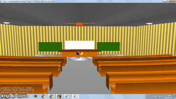
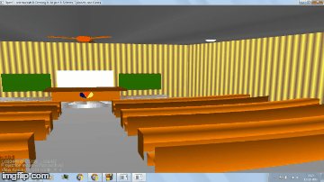
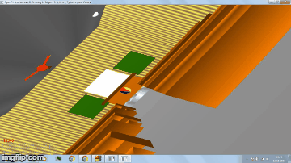
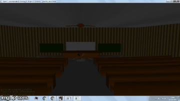

The Objective of the assignment is to create a classroom scene with camera having various features such as Zooming,Panning, and Rolling the camera
ZOOM:This allows user to zoom into the current looking direction by using "Z" key (1.5X,2.25X available ).

PAN: This option allows user to interact with the scene by scrolling to left and right area of the scene using Arrow Keys.

ROLL:This will give user rolling view of the camera in clockwise and anticlockwise direction.

LIGHTING EFFECT:This feature allows user to switch on the lights.4 lights are installed on the ceiling and can be switched ON and OFF using num keys "1" "2" "3" "4"

MOVING FAN:A fan is installed on the ceiling of classroom which starts with slow speed and after some time reaches its maximum speed,the fan remains on till atleast one of the four light is on.
WALLS:The wall have been implemented using alternating qauds of different colour thus giving a pseudo texture to wall
CURVED BENCHES: Curve of the benches have been implemented by placing quads radially at certain angle